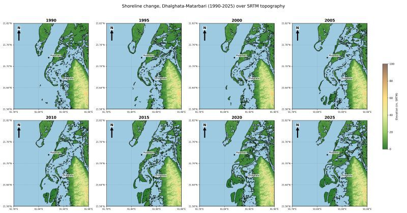
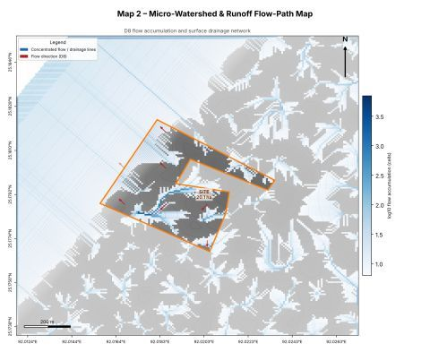
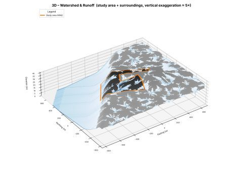
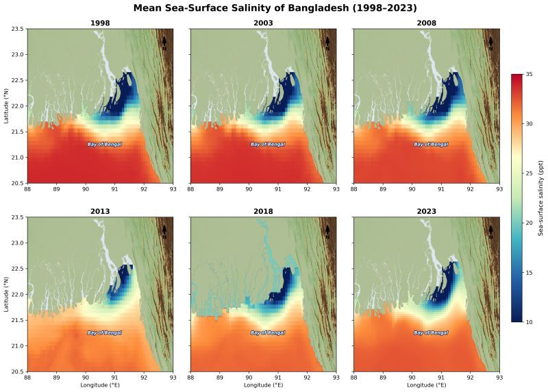
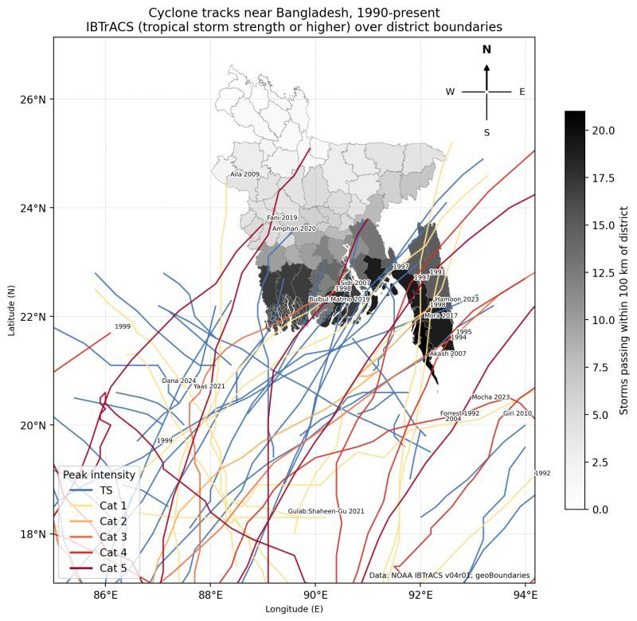
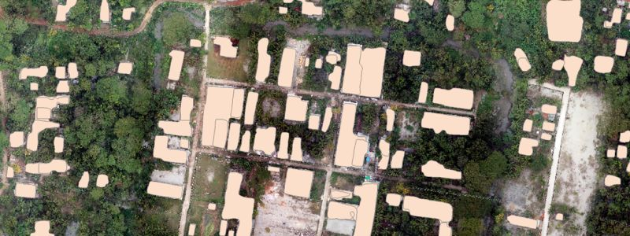

Profile Summary
An emerging geospatial professional with expertise in geospatial data science, remote sensing, GIS, environmental modelling, spatial analysis and field-based research. I integrate field observations with geospatial technologies and data-driven methods to understand environmental challenges, support evidence-based decision-making, and contribute to sustainable development and environmental resilience.
Research Interests
What I spend my time on.
LULC & land surface temperature
Landsat/Sentinel classification, change detection, accuracy assessment and urban heat island mapping.
CMIP6 projections
Historical and future climate variability and extremes across South Asia using NEX-GDDP–CMIP6 multi-model ensembles.
Explainable ML
SHAP-driven machine learning for modelling LST from surface indices.
Field-based research
Survey design, KII/FGD, and GPS field mapping combined with satellite data.
Projects & Figures
Selected maps and figures from my geospatial work. Select an image to open it full size.


Shoreline change, Dhalghata–Matarbari, 1990–2025
Eight-date comparison at five-year steps (1990 to 2025) of the shoreline near Matarbari and Dhalghata, drawn over SRTM elevation to show how coastal land and tidal flats shifted.


Micro-watershed and runoff flow paths
D8 flow direction and flow accumulation around a study site, showing concentrated drainage lines and the routes surface runoff follows (log scale).


3D watershed and runoff surface
Three-dimensional terrain of the study area and its surroundings, with 5× vertical exaggeration and the drainage network draped over the surface.

Dhaka greenhouse gas and air-quality maps, 2025
Mean 2025 maps of CH4, NO2, SO2, CO and O3 across Dhaka city, showing how each parameter varies in space.


Sea-surface salinity of Bangladesh, 1998–2023
Mean sea-surface salinity at five-year steps from 1998 to 2023 across the northern Bay of Bengal, showing the low-salinity zone off the delta.

Relative microplastic pressure index, Bay of Bengal coast
Index built from Sentinel-2, population and night lights across four coastal zones, with proposed sampling stations. It is a proxy for sampling priority, not measured abundance.

Multi-year shoreline overlay, 1990–2025
Shorelines for eight dates (1990 to 2025) overlaid in separate colours, so position change can be read directly from where the lines separate.

Wetlands of Bangladesh, 2024
National wetland extent map for 2024 over a light basemap, with scale bar and north arrow.

Flood susceptibility of Bangladesh
National flood susceptibility map in five classes from very low to very high, with the highest susceptibility in the north-east, the coast and the lower delta.


Cyclone tracks near Bangladesh, 1990–present
IBTrACS tracks of tropical storm strength or higher, coloured by peak intensity, with districts shaded by the number of storms passing within 100 km. Major named storms are labelled.

3D landslide hazard
Landslide hazard in four classes (low to very high) draped over 3D terrain with 5× vertical exaggeration, with the study area boundary from a KML file.


Building footprints over aerial imagery
Building footprint polygons overlaid on a high-resolution aerial image of a settlement area.

River planform change, 1990–2025
Bank lines of a meandering river for eight dates, one panel per date from 1990 to 2025, for comparing channel shape over time.
Publications
Peer-reviewed and preprints.
Climate change scenario in Bangladesh: historical data analysis and future projection based on CMIP6 model
Jihan, Popy, Kayes et al. · doi:10.1038/s41598-024-81250-z
Geospatial assessment of urban heat island and LULC dynamics in Khulna City Corporation, Bangladesh
Sheikh, Popy, Jihan et al. · doi:10.1007/s00704-026-06139-5
Assessing the Ecological Consequences: Biodiversity Decline in Gopalganj, Bangladesh, under Climate Change
Jihan et al. · doi:10.4236/gep.2023.119019
SHAP-Driven Machine Learning Approaches for LST Modeling Using Surface Indices in Chuadanga
Rasul, Jihan, Khan, Sheikh, Popy · doi:10.21203/rs.3.rs-8461364/v1
Evaluation of NEX-GDDP–CMIP6 Multi-Model (29 GCMs): Historical and Future Climate Variability and Extremes in South Asia (1950–2100)
Work Experience
Research and professional roles.
Research Assistant · Gopalganj Science and Technology University
Satellite image processing, LULC change analysis, spatial preprocessing and thematic mapping in Python, ArcGIS and Google Earth Engine.
Research Consultant · CEGIS, Remote Sensing Division
Satellite and drone mapping, LULC classification, wetland identification and hill-cutting mapping with ERDAS Imagine, eCognition and ESRI tools.
Campus Correspondent / Sub-editor · Protidiner Sangbad & Doinik Astha
Protidiner Sangbad (Dec 2021 – May 2024) and Doinik Astha (Aug 2020 – Oct 2020). Reported on campus academic, social and cultural activities, conducted interviews and prepared timely, fact-checked news reports. Edited and proofread news copy, and assisted with headline writing and page preparation.
Research Assistant · Prof. S Dara Shamsuddin (retd), Jahangirnagar University
Contributed to a book on Mahasthan and its Environment via GPS-based field surveys of 60+ archaeological sites over ~80 km², with field data forms, geo-tagged photos and a field report. Prepared an updated map integrating 1930s survey data with new field data and current satellite imagery.
Education
Gopalganj Science and Technology University, Gopalganj-8105, Bangladesh.
MSc in Environmental Science and Disaster Management
CGPA 3.47 / 4.00
BSc in Environmental Science and Disaster Management
CGPA 3.20 / 4.00
Skills
Technical and research toolkit.
Research
Organizational
Licences & Certifications
Training and short courses.
Esri
- GIS for Climate ActionApr 2026
- Going Places with Spatial AnalysisMar 2026
- The ArcGIS Imagery MOOC: Foundations and FrontiersDec 2025
- Spatial Data Science: The New Frontier in AnalyticsOct 2025
- CartographyOct 2025
- GIS BasicsMar 2025
- Python for EveryoneMar 2025
Research Society
- GIS and Remote SensingSep 2020
- Python: Programming, Data Analysis and VisualizationOct 2021
UNICEF
- Emergency Preparedness and ResponseMay 2022
- Multisectoral Interventions in Emergencies Preparedness and ResponseMay 2022
Other
- World Health Organization: Standard Precautions: Waste ManagementMay 2020
- Press Institute of Bangladesh: Investigative JournalismJun 2022
- Digital Security Agency, Bangladesh: Digital Security EssentialsApr 2020
Volunteering
Clubs, response teams and student media.
Environmental Science Club (GSTU)
- Student Advisor2024–2026
- General Secretary2023–2024
- Research Secretary2022–2023
- Public Relation Secretary2022
Disaster Response Team Bangladesh (DRTB)
- Volunteer & Founding MemberJun 2022 – Present
GSTU Journalist Forum
- Office Secretary2021–2023
- Assistant Office Secretary2020–2021
References
Academic referees.
Samsunnahar Popy
Assistant Professor, Dept. of Environmental Science and Disaster Management, Gopalganj Science and Technology University, Gopalganj-8105, Bangladesh.
+880 1950 972694
popyesdm@gmail.com
Dr. Md. Rasheduzzaman
Assistant Professor, Dept. of Environmental Science and Disaster Management, Gopalganj Science and Technology University. PhD, Dept. of Ecosystem Studies, The University of Shiga Prefecture, Japan.
+880 1716 540399
pobittro@gmail.com